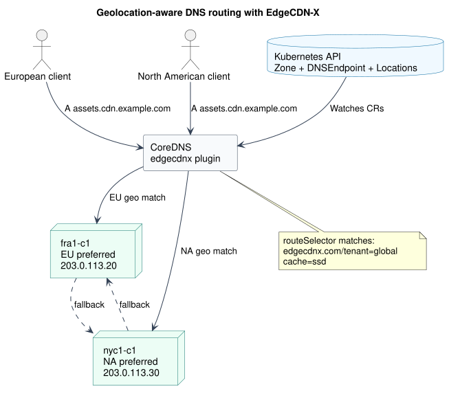

Kubernetes-Native DNS with CoreDNS and EdgeCDN-X
DNS configuration often lives outside the platform it serves. Application teams define workloads in Kubernetes, then switch tools and workflows to create records, route users, and manage failover. EdgeCDN-X brings those decisions into Kubernetes through its CoreDNS plugin and custom resources.
The result is a declarative DNS layer that can provide fixed answers or route requests across edge locations using client prefixes, geolocation, and node health.
Configure the CoreDNS plugin
The edgecdnx plugin watches DNSEndpoint, Location, PrefixList, and Zone resources in a configured Kubernetes namespace. Add it to the CoreDNS Corefile alongside the standard health, metrics, forwarding, and cache plugins:
.:53 {
errors
health
ready
edgecdnx . {
namespace edgecdnx
soa ns1
ns ns1.edge.example.com. 203.0.113.10
ns ns2.edge.example.com. 203.0.113.11
recordttl 60
dnsresponsetype A_AAAA
grpcresponsetype CNAME
}
prometheus :9153
forward . 1.1.1.1 8.8.8.8
cache 30
reload
}
namespace tells the plugin where to watch for EdgeCDN-X resources. The soa and repeatable ns directives provide authoritative zone data. Dynamic requests return node addresses by default, while grpcresponsetype CNAME selects CNAME responses for requests carrying gRPC metadata.
CoreDNS also needs Kubernetes credentials and RBAC permission to read the four resource types. The plugin reports ready only after its required Kubernetes informers have synchronized, so the standard ready plugin can keep traffic away during startup.
Define a fixed DNS record
A Simple DNSEndpoint returns the targets declared in the resource. This is useful for an origin, load balancer, or another address that does not need location selection:
apiVersion: infrastructure.edgecdnx.com/v1alpha1
kind: DNSEndpoint
metadata:
name: static-origin
namespace: edgecdnx
spec:
dnsName: static.example.com
routingPolicy: Simple
recordType: A
recordTTL: 300
targets:
- 203.0.113.20
Apply the resource with kubectl apply -f static-origin.yaml. CoreDNS observes the change through its Kubernetes informer and can answer A queries for static.example.com without maintaining a separate zone file.
Use case: route European and North American users locally
Consider an asset hostname served from Frankfurt and New York. European requests should prefer fra1-c1, North American requests should prefer nyc1-c1, and either location should take over if the other has no healthy nodes.

First, declare the authoritative zone. The contact uses the DNS SOA dot notation required by the Zone CRD:
apiVersion: infrastructure.edgecdnx.com/v1alpha1
kind: Zone
metadata:
name: cdn.example.com
namespace: edgecdnx
spec:
zone: cdn.example.com
email: noc.cdn.example.com.
Next, create two locations:
apiVersion: infrastructure.edgecdnx.com/v1alpha1
kind: Location
metadata:
name: fra1-c1
namespace: edgecdnx
labels:
edgecdnx.com/tenant: global
spec:
fallbackLocations:
- nyc1-c1
geoLookup:
weight: 50
attributes:
geoip/continent/code:
weight: 1000
values:
- value: EU
- value: NA
weight: -900
nodeGroups:
- name: ssd
flavor: ""
labels:
cache: ssd
nodes:
- name: n1
ipv4: 203.0.113.20
---
apiVersion: infrastructure.edgecdnx.com/v1alpha1
kind: Location
metadata:
name: nyc1-c1
namespace: edgecdnx
labels:
edgecdnx.com/tenant: global
spec:
fallbackLocations:
- fra1-c1
geoLookup:
weight: 50
attributes:
geoip/continent/code:
weight: 1000
values:
- value: NA
- value: EU
weight: -900
nodeGroups:
- name: ssd
flavor: ""
labels:
cache: ssd
nodes:
- name: n1
ipv4: 203.0.113.30
Finally, define the DNS entry. EdgeCDN-X evaluates the selector against the location labels merged with each node group's labels. Both locations above therefore match both selector terms: edgecdnx.com/tenant: global from metadata.labels and cache: ssd from spec.nodeGroups[].labels.
apiVersion: infrastructure.edgecdnx.com/v1alpha1
kind: DNSEndpoint
metadata:
name: cdn-assets
namespace: edgecdnx
spec:
dnsName: assets.cdn.example.com
routingPolicy: Geolocation
recordType: A
recordTTL: 60
routeSelector:
matchLabels:
edgecdnx.com/tenant: global
cache: ssd
When a query arrives, the plugin first checks PrefixList resources for an explicit source-network match. Without one, the GeoIP continent metadata drives location scoring: EU favors Frankfurt and NA favors New York. The plugin then selects a healthy matching node. Maintenance state, health conditions, and active alerts can remove candidates; the reciprocal fallbackLocations entries provide the alternate region when needed.
Apply the resources after the CRDs, plugin RBAC, and health reporting are installed. This keeps DNS entries, routing intent, and operational state in the same Kubernetes workflow. Review the complete EdgeCDN-X DNS guide and the CRD specification before adapting the example to your domains and addresses.